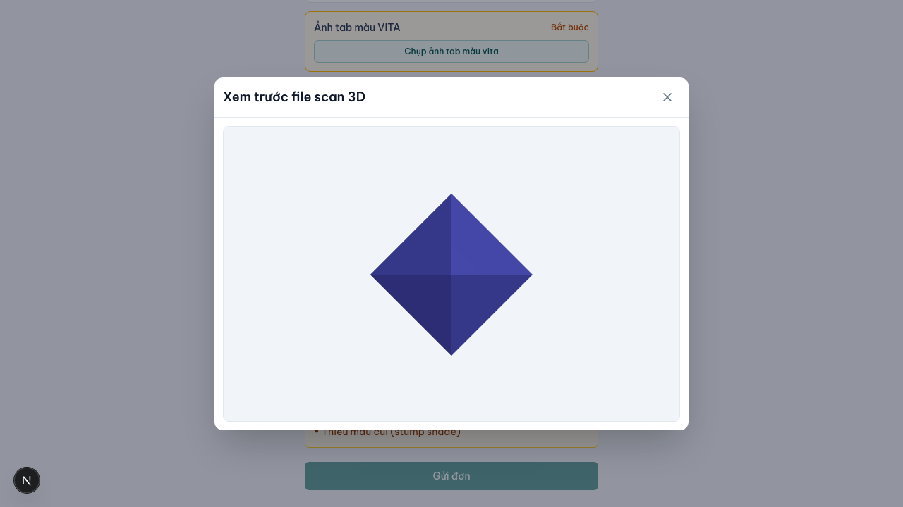
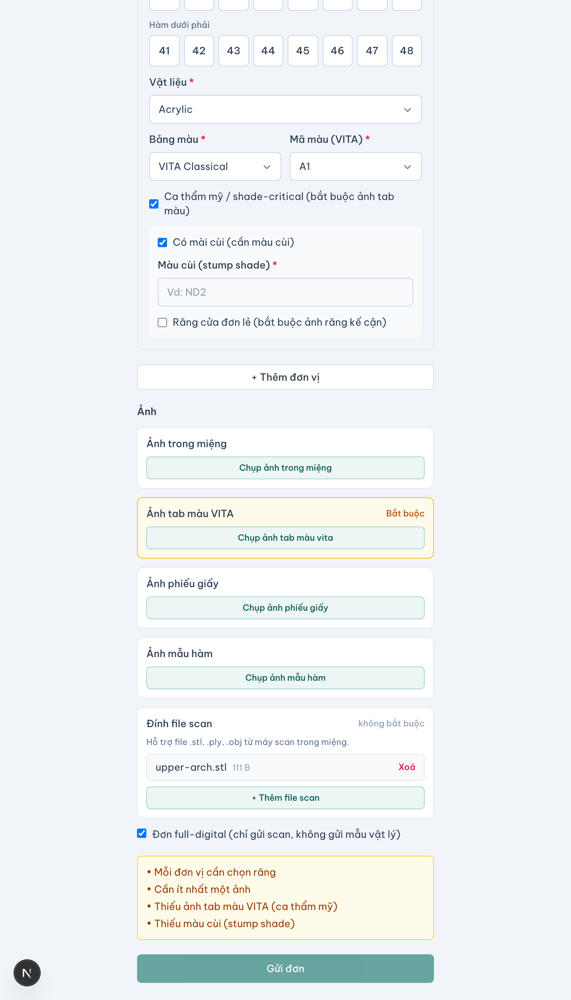
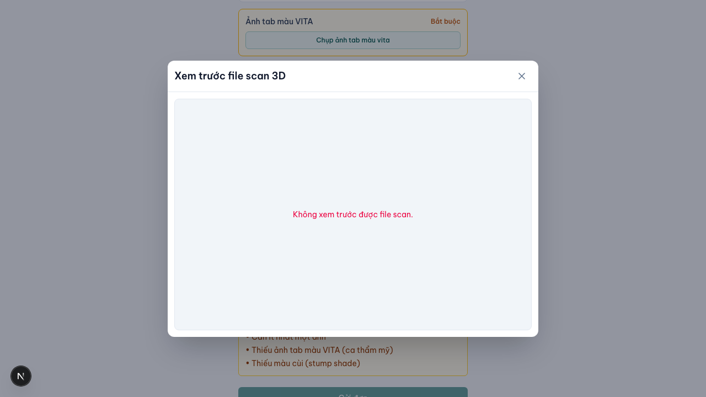

Tải STL / scan
Đường nâng cấp cho phòng khám có máy scan — STL không bao giờ bắt buộc.
Tải STL / scan cho phép phòng khám đã có máy scan đính kèm file scan kỹ thuật số (định dạng .stl / .ply / .obj) vào một work order. Đây là đường nâng cấp tuỳ chọn, không phải đường nhập liệu chính: chỉ ~30–35% phòng khám VN có máy scan trong miệng, phần còn lại vẫn gửi dấu vật lý + ảnh. Vì vậy ảnh + dấu vật lý mãi là đường chính; STL chỉ là lựa chọn thêm cho case có sẵn scan.

Đính file scan vào đơn
STL upload là một bước tuỳ chọn bổ sung vào bước "Đặt" của đặt đơn không cài, không phải luồng riêng. Sau khi điền các trường tối thiểu (ảnh vẫn là đường chính), phòng khám có thể đính thêm file scan trong vùng "Đính file scan (tuỳ chọn)".
- Định dạng chấp nhận —
.stl,.ply,.objvà biến thể nén; gồm file export từ 3Shape, Medit, iTero ở dạng chung. File ngoài danh sách bị từ chối với thông báo rõ. - File lớn, upload resumable — file tới hàng trăm MB upload phân mảnh, có thể tiếp tục; mạng yếu/đứt giữa chừng thì nối lại, không tải lại từ đầu.
- Nén khi truyền/lưu — giảm băng thông và chi phí, lossless với mesh (không hỏng hình học).
- Quota & giới hạn — có giới hạn kích thước/số file theo cấu hình; vượt thì báo và chặn, không lưu âm thầm.

Case full-digital: bỏ được chân vật lý
Giá trị thật khi phòng khám có scan là bỏ được chân vật lý. Nếu đơn chỉ có scan, không gửi mẫu vật lý, đánh dấu là case full-digital (STL-only): labo vào sản xuất được luôn, không phải chờ mẫu hàm tới nơi. Nếu vừa scan vừa gửi mẫu thì vẫn theo chân vật lý bình thường.
Xử lý file lỗi
Sau khi tải lên, hệ thống dựng preview để xác nhận đúng file. Nếu file hỏng / mesh lỗi, preview thất bại — hệ thống báo phòng khám tải lại, nhưng không chặn việc gửi đơn vì STL là tuỳ chọn.

| Tình huống | Cách xử lý |
|---|---|
| Mạng yếu / đứt giữa chừng | Upload resumable, nối lại từ phần đã tải |
| File quá lớn / vượt quota | Báo rõ, chặn, gợi ý nén hoặc tách hàm |
| Định dạng lạ (.dcm, .zip…) | Từ chối với thông báo |
| File hỏng / mesh lỗi | Preview lỗi, báo tải lại; không chặn gửi đơn |
| Không có máy scan | Bỏ qua bước này, gửi bằng ảnh/dấu vật lý |
Đây là đường upload thủ công: nhận file export thủ công từ 3Shape/Medit/iTero. Pull file tự động từ máy/cloud của hãng scan thuộc một dự án riêng (device API integrations), ngoài phạm vi tính năng này.